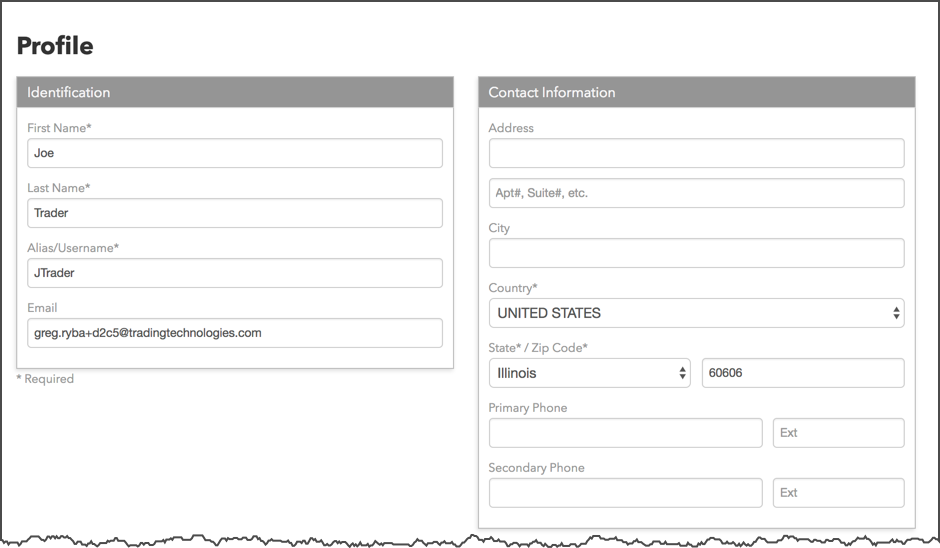
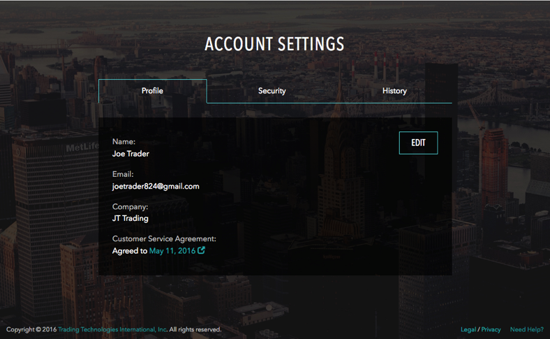

In order to access the TT platform to trade GDAX only, you have to create a TT account (TT ID). After creating your TT account for GDAX, you can manage the TT account and account settings from within the Trade application using the TT menu bar.
After you log in to TT as a GDAX only user, you can click Setup in the TT menu bar to manage your account:
The following pages are available for managing your TT account for GDAX:
On the Profile page you can update your TT username/alias and personal contact information. Also, if you choose the "Pay Now" option when signing up, you'll be directed to this page.

This page allows you to view and modify your GDAX credentials that you created on gdax.com for your Coinbase account.

As a trial user, directly-billed user, or member of a trading firm, you can click your account name in the TT menu bar to access your account settings.

The tabs on the TT account settings page allow you to modify your profile, configure account security options like two-factor authentication, and view your TT account history.
In this section, you can update your name, company, and email address, as well as review your customer service agreements.

You can choose whether to use added login protection from the Security section. You can enable two-step verification and change your password.

TT records all of the login attempts and account-related activity for your TT account. You can use the History section to review the information. If you see any suspicious activity, you should contact TT Support immediately.